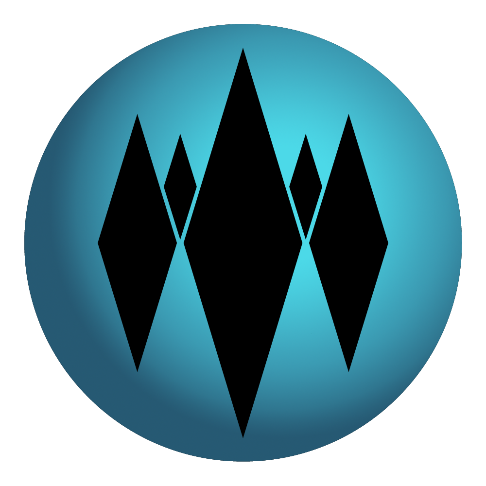

Normal pokemon
Eevee


Requirements to evolve
Eevee is a small, mammalian, quadrupedal Pokémon. Eevee has an irregularly shaped genetic structure that is easily influenced by its environment. This allows it to adapt to a variety of habitats by evolving. Eevee can potentially evolve into 8 different evolutions.
Hidden Ability
Eevee is the only known Pokémon capable of using the exclusive Z-Move Extreme Evoboost.
Water pokemon
Vaporeon

Requirements to evolve
Vaporeon shares physical traits with aquatic animals and land creatures in appearance. Its face is feline in structure, with a short muzzle and a small, triangular nose. Vaporeon is the result of an Eevee's exposure to the radiation of a Water Stone. It evolves from Eevee when exposed to a Water Stone. It is one of Eevee's final forms.
Hidden Ability
Vaporeon's hidden ability is Hydration.
Lightning pokemon
Jolteon


Requirements to evolve
Jolteon is covered in spiny bright yellow fur. It has long ears resembling a rabbit and a blunt catlike muzzle with a small black triangular nose. Its back legs seems to be powerfully-built, allowing it to run at high speeds like a cheetah. It evolves from Eevee when exposed to a Thunder Stone. It is one of Eevee's final forms.
Hidden Ability
Jolteon's hidden ability is Quick Feet.
Fire pokemon
Flareon


Requirements to evolve
Flareon has vivid flame-orange fur with a bushy yellow mane, a flame-shaped long tail, and fur atop its head, in a fireball shape. Its body is generally bulkier than most of the Eeveelutions. Of all the Eeveelutions, Flareon resembles Eevee the most. Flareon is one of the evolutions of Eevee that is caused by being exposed to a Fire Stone.
Hidden Ability
Flareon's hidden ability is Guts.
Dark pokemon
Umbreon


Requirements to evolve
Umbreon resembles a black cat, a black rabbit, or a canine. It has red eyes, and unlike the rest of the Eeveelutions, it also has visible black-colored oval-shaped pupils that often appear slit. Umbreon has small sharp fangs, and can be seen when it opens its mouth. Umbreon evolves from Eevee if it levels up at night with high friendship.
Hidden Ability
Umbreon's hidden ability is Inner Focus.
Psychic pokemon
Espeon

Requirements to evolve
Espeon is a quadruped mammalian Pokémon with catlike features. It has sleek and lilac purple fur covers its body. It has a red jewel attached to its forehead. Eevee evolves into Espeon by leveling up with high friendship during the day. In Pokémon XD: Gale of Darkness, Eevee can also evolve into Espeon by using a Dark Shard.
Hidden Ability
Espeon's hidden ability is Magic Bounce.
Grass pokemon
Leafeon

Requirements to evolve
Leafeon is a quadruped mammalian whose most distinguishing features are its lithe body structure and vegetation protruding from its body. Eevee evolves into Leafeon at any given level, when leveled up in Eterna Forest, Pinwheel Forest, Route 20, Petalburg Woods or the Lush Jungle near the moss covered rock.
Hidden Ability
Leafeon's hidden ability is Chlorophyll.
Ice pokemon
Glaceon
Requirements to evolve
Glaceon bears a resemblance to an Arctic animal. Its fur is a light-blue color, with diamond-shaped patterns on its back, tail, and ears in a darker shade of blue. It has a short feline muzzle with a small triangular nose along with long pointed ears. Glaceon can control their body heat and freeze the air around them to create a diamond-dust flurry
Hidden Ability
Glaceon's hidden ability is Icy Body.
Fairy pokemon
Sylveon


Requirements to evolve
Jolteon is a quadrupedal, mammalian Pokémon. It evolves from Eevee when exposed to a Thunder Stone. It is one of Eevee's final forms.
Special move
Jolteon's hidden ability is Volt Absorb.